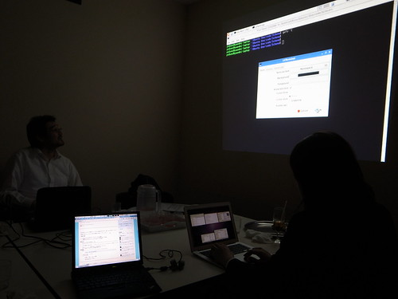

Workshop/HaskellR/3

調整
出欠確認
日時
2011/05/25(水) 19:00-22:00
場所
資料
宿題 (出題:@yuzutechnology)
宿題回答
@seizans
@master_q
@s_h_i_g_e_chan
“Stack.hs” :: a note in allegronontroppo’s Springpad “Queue.hs” :: a note in allegronontroppo’s Springpad
Arrowの簡単な説明 (解説:@khibino)
スライド(pdf) khibino / haskell-beginner / overview – Bitbucket
議事録
録画と写真
宿題回答について
@seizans
(感想として)classの作り方がむずかしかった。
の場合のbっていきなり出てきていいの？(<=慣れるしかない。。。) isEmptyはパターンマッチを使っても書ける。↓の例だと順序に注意。
pop関数のパターンマッチには失敗することがあるので、 失敗するパターンにはerror関数で拾うと人間にわかりやすい実行時エラーが出る。 また、ghcの-Wallオプションを有効にするとコンパイル時にさえ警告になる。 というか-Wallオプションは常時使えよ！(by @khibino)
pop :: Stack a -> (a, Stack a)
pop (MakeStack []) = error "attempt to pop an empty stack" -- <= この行が必要
pop (MakeStack (x:xs)) = (x, MakeStack xs)どうしてもパターンの前に“~”を付けて、反駁不能であることを宣言すること。(“反駁不能”についてまとめ中 by @master_q)
@master_q groupBy' のように内側のパターン照合と if を交換すれば止まるようにできますが、そうではなくて groupBy'' のように書きたいとき には ~ が使えるという話です。わかりにくいかな...
khibino 2 日前
@master_q PreludeのgroupByと同じものを書こうとしてみたときに、groupByBad のように書くと、無限リストの入力を与えたときに止まりません (testBad2)
khibino 2 日前
@master_q さきほどの話の例ですが、こんなのはどうでしょう。 http://ideone.com/6nST9
khibino 2 日前詳しくは A Gentle Introduction to Haskell: Patterns を参照。
Queueを↓のようにBatchedQueueな構造にした場合、同じ意味でも異なる構造を取ることがある。 そのためderivingによる自動導出は正しい意味を持たない。自分で同等の関数を実装するべき。
isEmptyが↓のように定義されているということは、 MakeQueueの右側リストに要素が存在する場合には左側リストが空になってはいけないということになる。(不変条件)
dequeue関数は↓のように書かれているが、冗長かもしれない。
↓のように簡潔に書ける。
@master_q
公開インターフェイスはStackのみ全公開にすること。カプセル化がくずれてしまう。
module Stack (Stack(..), SimpleStack(..)) where -- SimpleStackの中を弄れてしまうので、、、
module Stack (Stack(..), SimpleStack) where -- Stack経由でSimpleStackを使うように直す全体的に不要な括弧が多すぎる。関数適用は演算子よりも優先度が高いので、↓の例では括弧が不要。 (空白に対する恐怖が。。。 by @master_q)
-- 括弧が多い例
isEmpty :: (s a) -> Bool
cons :: a -> (s a) -> (s a)
head :: (s a) -> a
tail :: (s a) -> (s a)
-- ↑のような括弧ははずすことができる
isEmpty :: s a -> Bool -- "s a"は関数適用、"->"演算子のようなもの、関数適用の方が優先度が上 慣れろ!!!!
cons :: a -> s a -> s a
head :: s a -> a
tail :: s a -> s a上記のような冗長な記述はhlintコマンドを使えば自動的に教えてくれる。 よくMakefileのtestターゲットにHUnitのテストと共にhlintの適用も入れることがある。(by @yuzutechnology)
今回の例で、isEmpty関数はempty関数を使って実現できるはずだが、 ↓の例だと“SS ss”のssの型が推論できずにコンパイルエラーになってしまう。 Haskellには型推論があるが、人間で書けるところは人力で書く癖を付けておいた方が(人間の)混乱が少ない。
“=”の右辺で使わないパターンは"_"を使うようにすること。例えば、、、
前回も指摘したが、「呼び出される回数が多いモノ」から順番にパターンマッチを書くように気をつけること。 errorで拾うパターンは明らかに実行される頻度が低いはず。
さきほど、括弧が多いと指摘したが、 ↓の例の場合“(Maybe s) a”と解釈されないようにするために“Maybe (s a)”と書かなければならない。
Arrowの簡単な説明 (解説:@khibino)
xxxxxxxxxxxx
ネタ案出し
- 宿題第二回のネタは既にある (@yuzutechnology)
- pandocかgititの利用者として困りネタ説明 (@master_q)
- Stateモナドについて (@master_q)
会計
(9140円 - 1000円(前回からの繰り越し)) / 7人 = 1200円/人